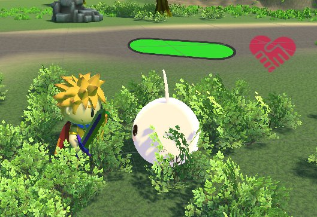
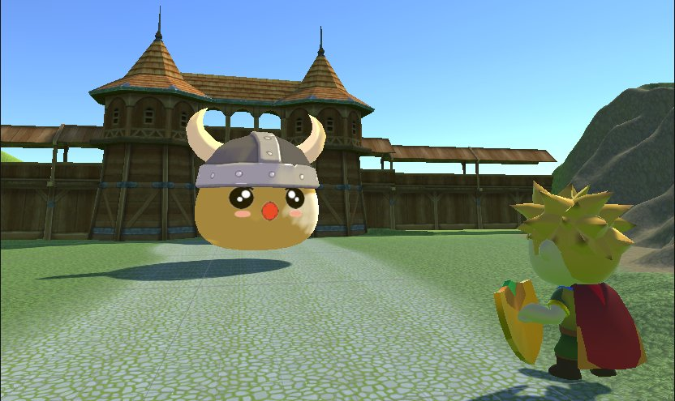

実際のプレイ映像（戦闘・仲間システム・ボス戦）

概要
「一人で戦うのではなく、仲間が増えていくアクション」を作りたくて企画したゲームです。 プレイヤーは勇者を操作し、フィールドに散らばるアイテムを集めるとスライムの仲間が増え、 集めた仲間と一緒にボスへ挑みます。戦闘には QTE（クイックタイムイベント）を織り込み、 ボタン連打で終わらない手触りにしました。
キャラクター・小物・フィールドの 3D モデルはすべて Blender で自作しており、 アセットの用意からゲームループの実装、スマホ実機での動作確認まで一貫して行っています。
実装したシステム
- スライム仲間システム：アイテム回収数に応じて仲間が追加され、追従・攻撃を行う。仲間ごとに追従位置を分散させ、団子状に固まらないよう制御
- QTE 戦闘：一定条件で入力受付ウィンドウが開き、タイミング入力に成功すると強攻撃に派生する仕組み
- キャラクター AI：敵と仲間の状態遷移（待機 / 追跡 / 攻撃 / 被弾）をステートマシンで管理
- ボス戦：フェーズごとに行動パターンを切り替え、集めた仲間の数が攻略難度に影響する設計
- タッチ操作 UI：仮想スティックとアクションボタンを親指の届く範囲に配置し、スマホの狭い画面でも操作できるレイアウトに調整
設計で考えたこと
報酬ループを「仲間が増える」ことに集約する
スコアや装備ではなく、仲間の数がそのまま強さと画面の賑やかさに直結する構造にしました。 探索の見返りが視覚的に分かるため、プレイヤーが次のアイテムを探す動機を作りやすいと考えたためです。
モバイルで動かすための割り切り
仲間が増えると同時に動くキャラクター数も増えるため、モデルはローポリ + テクスチャで軽量に作り、 仲間の思考更新を毎フレームではなく間隔を空けて回すことで負荷を抑えました。 描画と AI のどちらがボトルネックかを実機で確認しながら調整しています。
振り返り
約 1.5 ヶ月という期間で「遊べる状態」に到達させるため、やりたい要素を一度すべて書き出し、 コアループ（探索 → 仲間増加 → ボス戦）に効くものだけを残しました。 スコープを削る判断を先にしておくことが、個人制作を完成させる上で一番効いたという実感があります。
また、3D モデルを自分で作ったことで「実装しやすい形状・ボーン構成」を意識できるようになり、 この経験が後の 自動リギングアドオン の制作につながっています。